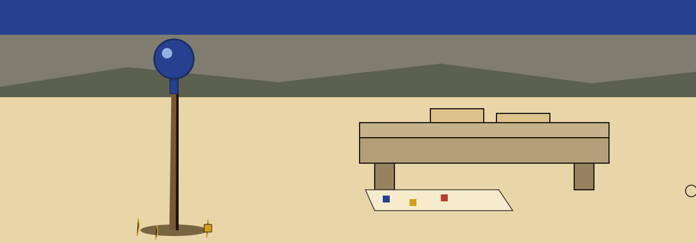

Station One. The Job, Stated Plainly
Values in a dataset are replaced with nulls, None in Python or NULL in SQL, chosen by probability or by pattern, so actual data is hidden while structure and statistical properties remain.
Replaces values within a dataset with null values (None in Python, NULL in SQL, etc.) based on a specified probability or pattern matching. This helps obscure actual data while maintaining data structure and statistical properties. - Focused on Tools designed to generate or mask sensitive data with realistic-looking but meaningless values
Station Two. Fetching the Code, With One Open Repair
The published record carries this line:
git clone https://github.com/ShadowStrikeHQ/dm-data-null-injector
Correction, labelled as a correction: a visitor who follows that line literally reaches a predecessor organisation, not this one. The corrected direction is:
git clone https://github.com/ShadowGuard-AI/dm-data-null-injector
Nothing about the corrected line is original wording. The reason stands beside it in plain view: the published line names the older house.
Station Three. The Invocation Shape, and Nothing More
./dm-data-null-injector [params]
This station stops there. No example dataset, no example column name taken from real work, and no cell value of any kind is printed to fill the space.
Station Four. The Four Controls, in Record Order
-h: Show help message and exit--probability: No description provided. Absence, printed at full size: the README prints no description for this control, and no default or range for it is printed anywhere in the record.--pattern: Regular expression pattern to match values to be replaced with null. If not specified, all values are considered.--columns: Comma-separated list of column names to apply the null injection to. If not specified, all columns are considered.
Absence, printed at full size: no input file argument, no output file argument, and no seed control are named in the parameters block as published.
Station Five. The Output Is Never the Input
The output file must not be the input file. If the resolved output path equals the resolved input path, the run refuses at exit 1 before any write, including when the same file is named through a ./ alias or a symlink.
The input is left untouched, which follows from refusal before any write.
Station Six. Two Licence Facts, Kept Apart
First: the repository licence file
The repository holds a file called LICENSE with MIT terms. Its holder is reported by shape only: years spanning a range up front, a given name next, a family name after that, a shortened form in round brackets carrying one initial, then a handle also in round brackets. The holder line itself is not transcribed here.
Second: a site level note on the README closing line
The README closes, in its published form, with a line naming the predecessor organisation:
Copyright (c) ShadowStrikeHQ
These two facts are never merged into a single credit line.
Station Seven. The Count Aloud at the Gate
This station belongs to the site alone. Before a visitor leaves the ring, the bench is counted aloud, item by item, and the count is the whole of the station: one staff, one bench, one stack of blank wax tablets, one cloth of spilled tesserae, four controls, one guard, and three open gaps. The gaps are the missing probability description, the missing probability default or range, and the unnamed way a caller points the tool at a dataset. Nothing is added to make the count come out even.
Wax tablet: a finished run is the only card here that bears a small staff mark in its top corner. No run is reported on this page, so no card here bears that mark.

The Full Live Record
The live README, housed verbatim below.
 # dm-data-null-injector Replaces values within a dataset with null values (None in Python, NULL in SQL, etc.) based on a specified probability or pattern matching. This helps obscure actual data while maintaining data structure and statistical properties. - Focused on Tools designed to generate or mask sensitive data with realistic-looking but meaningless values ## Install `git clone https://github.com/ShadowStrikeHQ/dm-data-null-injector` ## Usage `./dm-data-null-injector [params]` ## Parameters - `-h`: Show help message and exit - `--probability`: No description provided - `--pattern`: Regular expression pattern to match values to be replaced with null. If not specified, all values are considered. - `--columns`: Comma-separated list of column names to apply the null injection to. If not specified, all columns are considered. ## Output path The output file must not be the input file. If the resolved output path equals the resolved input path, the run refuses at exit 1 before any write, including when the same file is named through a ./ alias or a symlink. ## License Copyright (c) ShadowStrikeHQ